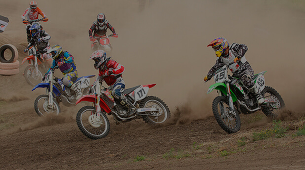

Большой заголовок первого уровня в 1 или 2 строки
«Пивоварня Златоуста» - это два, юридически, самостоятельных предприятия объединенные в единое производство.
В состав объединения входят ООО «Пегас» и ООО «Пивоиндустрия». Исторически, предприятие основано в 1994г., как образцовое подразделение знаменитого производственного объединения «Златоустовский Машиностроительный завод» – участвовавшего в разработке и изготовлении морских баллистических ракетных комплексов и в связи с решением советского правительства, приступившего к изготовлению современного высококачественного оборудования – мини пивоварни.
Большой заголовок второго уровня, чтобы показать межстрочное расстояние
Приглашаем всех любителей маунтинбайка принять участие в соревнованиях, проходящих в самых красивых и техничных горах Южного Урала.
- 07 июня: День заезда команд. Регистрация
- 08 июня: Первый гоночный день — уникальные места хребта Уреньга (протяженность: 80 км)
- 09 июня: Второй гоночный день — самый красивый и техничный этап по осевым хребтам.
- 10 июня: Третий гоночный день — все самое лучшее, что было в RS-2010 (протяженность: 95 км).
- 11 июня: Четвертый гоночный день — окрестности озера Тургояк - жемчужины Южного Урала.
- 12 июня: День отъезда
Большой заголовок третьего уровня, чтобы показать межстрочное расстояние
Место расположения Базового лагеря — спортивный центр «Ай» г. Златоуст на берегу реки Ай. Для любителей комфорта — в 2 км от лагеря — гостиница «Таганай» и «Бальмонд».
- Из города Екатеринбурга будет организован трансфер до Базового лагеря.
- На расстоянии 5 км от лагеря находится жд. станция Златоуст — ЮУЖД.
- Организаторы гонки: команда ProBike Team при содействии Министерства Спорта и Туризма.
| Страна | Столица | Континент | Население страны |
|---|---|---|---|
| Российская федерация | Россия | Азия | 243 206 |
| Австрия | Вена | Европа | 8 747 000 |
| Азербайджан | Баку | Азия | 9 762 000 |
| Албания | Тирана | Европа | 2 876 000 |
| Алжир | Алжир | Африка | 40 610 000 |
| Ангола | Луанда | Луанда | 28 810 000 |
Приглашаем всех любителей маунтинбайка принять участие в соревнованиях, проходящих в самых красивых и техничных горах Южного Урала.
Место расположения Базового лагеря — спортивный центр «Ай» г. Златоуст на берегу реки Ай. А для любителей комфорта — в 2 км от лагеря — гостиница «Таганай» и «Бальмонд».